Métodos gráficos para resumir información
Introducción
En la etapa de diseño de la investigación se establece la identificación de variables, la estrategia de recolección de datos de acuerdo al diseño de estudio, el plan de captura y estructuración de la información y finalmente se establece el plan de análisis estadístico.
La primera parte de plan de análisis siempre necesita de la organización y presentación de los resultados, es decir, todo lo correspondiente al análisis descriptivo de los datos. Para esto, se cuenta con una colección de métodos de presentación de información: gráficos, tablas y medidas de resumen. Dado el tipo de variable y sus divisiones corresponde un conjunto de gráficos, tablas y medidas de resumen
Elementos de un gráfico
Para la presentación de la información a través de gráficos, tenga en cuenta que las recomendaciones mínimas para la construcción de un buen gráfico:
Facilidad para comparar e identificar comportamiento de los datos
Lenguaje preciso y claro de tal manera que se eviten confusiones sobre las características de los datos mostrados
Evitar gráficas donde el gran número de categorías, indicadores o variables dificulten su interpretación
Distinción clara de las categorías o rótulos del gráfico
Notación de cifras y de decimales claras
Evitar el uso de abreviaturas
Las siglas/acrónimos deben de ir en mayúsculas y sin puntos intermedios
Aclarar la escala de los ejes

Los errores comunes que se presentan en los gráficos técnicos son:
Falta de títulos, convenciones y etiquetas
Falta de escala en los ejes
Congestionamiento o exceso de información
Escasez de datos
Mala calidad de la impresión
Incluir un eje adicional sin sentido para dar efectos 3D
Gráficos para Variables Cualitativas
En la sección anterior se explicó las clasificaciones de las variables, para el caso de las variables cualitativas se agrupan en Nominales y Ordinales. La construcción de gráficos adecuados para este tipo de variable se basan en la representación de los conteos, si se tiene más de una variable es posible mostrar su relación.
Gráfico de barras
Este gráfico se caracteriza por identificar las categorías o niveles de una variable cualitativa a relacionando la frecuencia de ocurrencia (frecuencia absoluta) a través de barras separadas. Para que el gráfico cobre sentido e interpretación rápida se recomienda que cada barra tenga un color distinto.
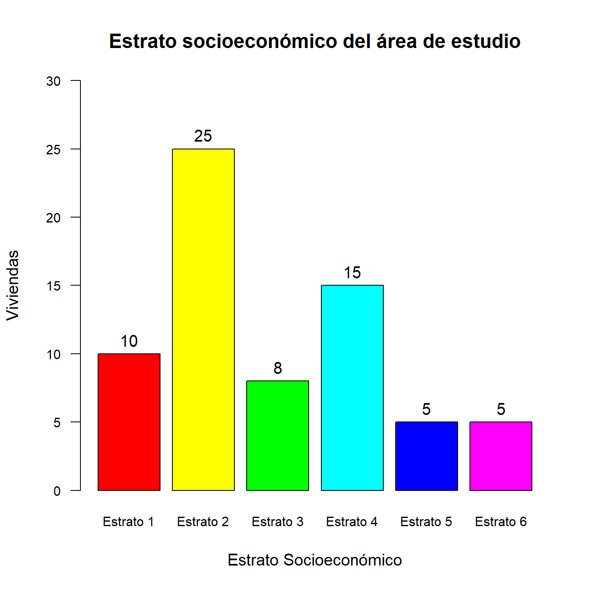

Este gráfico también puede usarse para representar la frecuencia relativa o los porcentajes que que representa la ocurrencia de cada categoría.
En R es fácil construir este gráfico con el siguiente código:
# Construya el vector de datos
# la función "c" concatena los elementos
# la función "rep" repite n veces los elementos
viviendas <- c(rep("Estrato 1",10),rep("Estrato 2",25),rep("Estrato 3",8),
rep("Estrato 4",15),rep("Estrato 5",5),rep("Estrato 6",5))
# Construya la tabla de frecuencias con la función "table"
tabviv <- table(viviendas)
# La función "barplot" construye el gráfico de barras de una tabla
# en la función se ingresan los argumentos para dar el toque estético
b1 <- barplot(tabviv,las=1,main = "Estrato socioeconómico del área de estudio",
ylab="Viviendas",xlab="Estrato Socioeconómic",col=rainbow(6),
ylim=c(0,30),cex.names = 0.8,cex.axis = 0.8)
# Para añadir las frecuencias a las barras está este truco
text(b1,tabviv+1,labels = tabviv)
# Consulta la ayuda de las funciones
?barplot
?table
?c
?rep
?rainbow
?textEste gráfico también es útil cuando se tiene dos variables categóricas, siempre y cuando los niveles de dicha variable sean pocas para no saturar el gráfico.
Ejemplo
Apilado

Separado

Gráfico de torta
El gráfico de torta muestra por secciones de un círculo las proporciones o frecuencias de las categorías de una variable cualitativa

Este gráfico tiene la dificultad en términos de interpretación, ya que la disposición circular no permite hacer distinciones sencillas sobre la proporcionalidad a menos que la categorías sean claramente dispares
Ejemplo
Torta

Barras
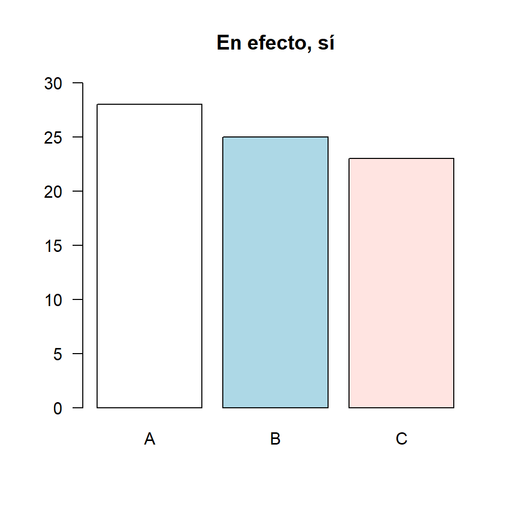
Una opción para reducir la limitación de proporcionalidad en este gráfico es utilizar etiquetas para indicar las proporciones o frecuencias de cada categoría, o bien usar un gráfico de dona.
Ejemplo
Torta
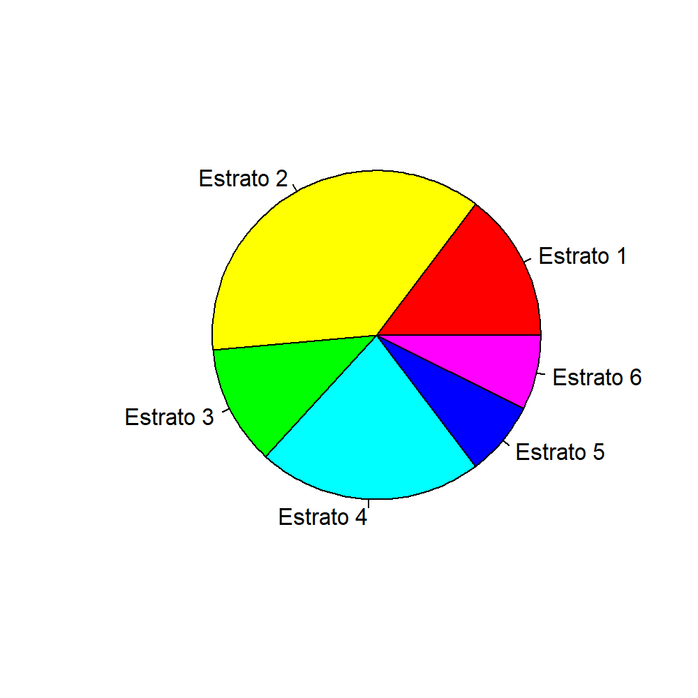
Dona
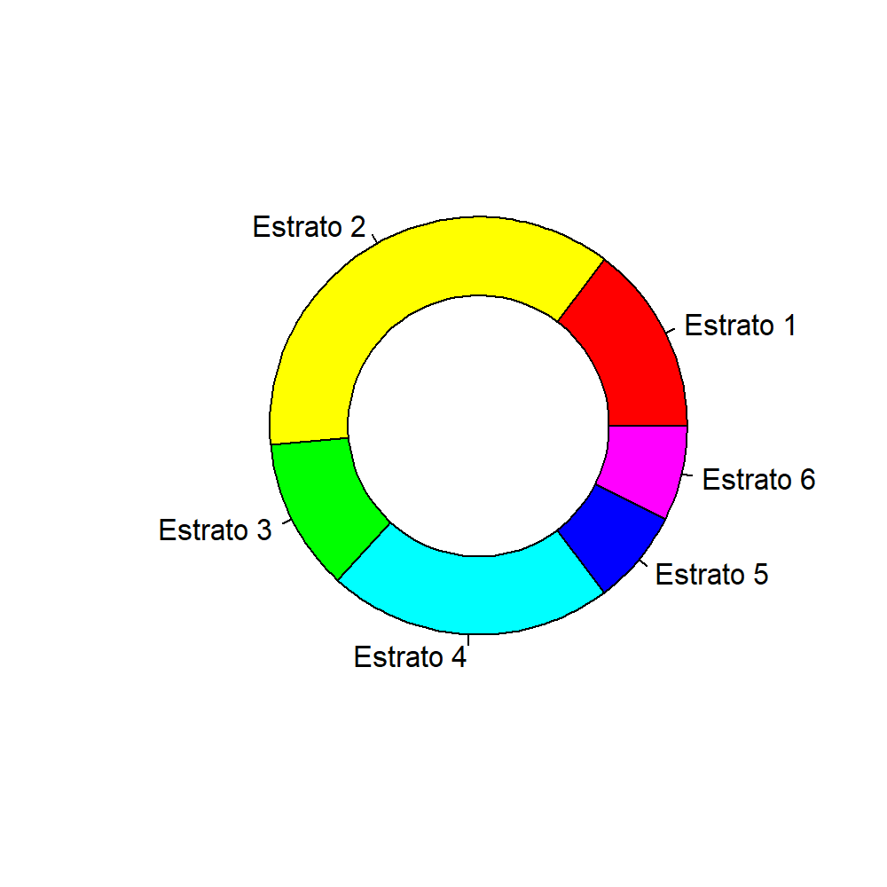
En R es fácil construir este gráfico con el siguiente código:
# Construya el vector de datos
# La función "c" concatena los elementos
# La función "rep" repite n veces los elementos
viviendas <- c(rep("Estrato 1",10),rep("Estrato 2",25),rep("Estrato 3",8),
rep("Estrato 4",15),rep("Estrato 5",5),rep("Estrato 6",5))
# Construya la tabla de frecuencias con la función "table"
tabviv <- table(viviendas)
# La función "pie" construye el gráfico de tortas de una tabla
# En la función se ingresan los argumentos para dar el toque estético
# En el argumento labels, se puede usar la función "paste" para pegar
# la categoría ("names") con la frecuencia ("tabdep")
pie(tabviv,col = rainbow(6),
labels = paste(names(tabviv),tabviv,sep = "\n"))
# Consulta la ayuda de las funciones
?pie
?pasteDiagrama de puntos
Este gráfico también es similar al gráfico de barras, sirve para presentar las frecuencias absolutas o relativas de una variable cualitativa, y muestra un punto que representa el conteo del total de observaciones que hay para cada variable.
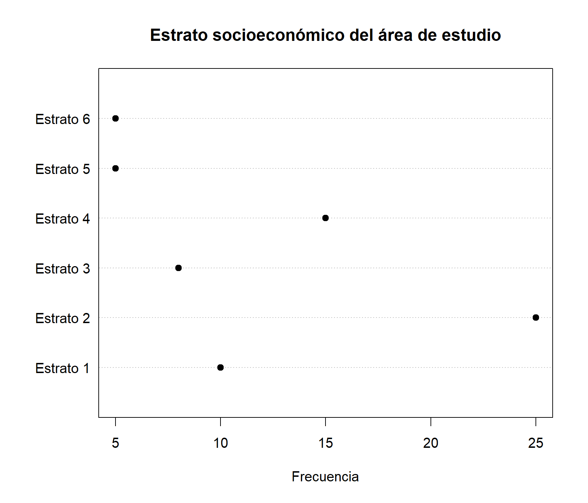
En R es fácil construir este gráfico con el siguiente código:
# La función "dotchart" construye el diagrama de puntos de una tabla
# En la función se ingresan los argumentos para dar el toque estético
# En el argumento pch, se pone el número que representa el símbolo a usar
dotchart(tabviv,pch = 19,xlab = "Frecuencia",
main = "Estrato socioeconómico del área de estudio")
# Consulta la ayuda de las funciones
?dotchartGráfico de mosaico
En muchas ocasiones se tiene más de una variable categórica y un gráfico de barras compuesto no es suficiente para exponer con precisión la información. Para este caso, el gráfico de mosaico permite relacionar más de dos variables para analizar las frecuencias entre los cruces de niveles de las variables categóricas.
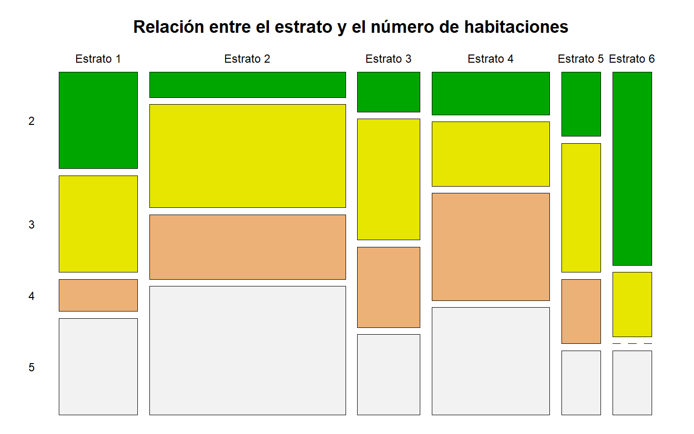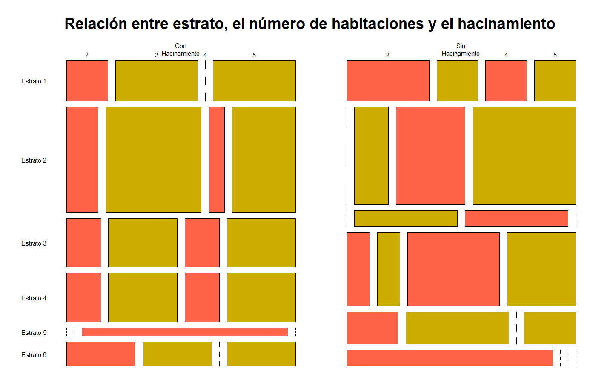
En R es fácil construir este gráfico con el siguiente código:
# Construya el vector de datos
# La función "sample" extrae número aleatorios
# La función "set.seed" establece semillas de números aleatorios
# La función "factor" convierte el texto a factor
set.seed(1234)
habit <- sample(2:5,68,replace = T)
habit <- factor(habit)
hacin <- sample(1:2,68,replace = T)
hacin <- ifelse(hacin==1,"Con\nHacinamiento","Sin\nHacinamiento")
# Construya la tabla de frecuencias con la función "table"
EstHab <- table(viviendas,habit)
# La función "mosaicplot" construye el gráfico de mosaico de una tabla
# En la función se ingresan los argumentos para dar el toque estético
mosaicplot(EstHab,las=1,col=terrain.colors(4),
main = "Relación entre el estrato y el número de habitaciones",
cex=0.8)
# Consulta la ayuda de las funciones
?mosaicplot
?sample
?factor
?ifelse
?set.seedDiagrama de Sankey
Este gráfico relaciona las transferencia de frecuencias entre los niveles de varias variables categóricas, también se conoce como Alluvial plot. Lleva el nombre de Sankey por el capitán irlandés Matthew Henry Phineas Riall Sankey quién utilizó este diagrama en 1898 en una publicación sobre la eficiencia energética de la máquina de vapor. El gráfico más famoso de este tipo, y catalogado como el mejor gráfico de la historia, es el diagrama de la invasión napoleónica a Rusia.

Para utilizar este gráfico necesitamos de un paquete especial de R llamado alluvial el cual se instala de la siguiente forma:
# código para instalar
install.packages("alluvial",dependencies = T)
# Una vez instalado, no es necesario repetir el proceso !!!
# para cargarlo en el entorno de trabajo usamos
require(alluvial)Siguiendo el ejemplo de las encuestas de las viviendas, es necesario hacer un cambio en cómo se entran los argumentos a la función, ya no necesitamos una tabla sino un marco de datos o data.frame.
## , , habit = 2
##
## viviendas
## hacin Estrato 1 Estrato 2 Estrato 3 Estrato 4 Estrato 5 Estrato 6
## Con\nHacinamiento 1 2 1 1 0 1
## Sin\nHacinamiento 2 0 0 1 1 2
##
## , , habit = 3
##
## viviendas
## hacin Estrato 1 Estrato 2 Estrato 3 Estrato 4 Estrato 5 Estrato 6
## Con\nHacinamiento 2 6 2 2 0 1
## Sin\nHacinamiento 1 2 1 1 2 0
##
## , , habit = 4
##
## viviendas
## hacin Estrato 1 Estrato 2 Estrato 3 Estrato 4 Estrato 5 Estrato 6
## Con\nHacinamiento 0 1 1 1 1 0
## Sin\nHacinamiento 1 4 1 4 0 0
##
## , , habit = 5
##
## viviendas
## hacin Estrato 1 Estrato 2 Estrato 3 Estrato 4 Estrato 5 Estrato 6
## Con\nHacinamiento 2 4 2 2 0 1
## Sin\nHacinamiento 1 6 0 3 1 0# Con la función "as.data.frame.table" se convierte
# las tablas en marcos de datos o data.frame
(datos <- as.data.frame.table(table(hacin,viviendas,habit)))## hacin viviendas habit Freq
## 1 Con\nHacinamiento Estrato 1 2 1
## 2 Sin\nHacinamiento Estrato 1 2 2
## 3 Con\nHacinamiento Estrato 2 2 2
## 4 Sin\nHacinamiento Estrato 2 2 0
## 5 Con\nHacinamiento Estrato 3 2 1
## 6 Sin\nHacinamiento Estrato 3 2 0
## 7 Con\nHacinamiento Estrato 4 2 1
## 8 Sin\nHacinamiento Estrato 4 2 1
## 9 Con\nHacinamiento Estrato 5 2 0
## 10 Sin\nHacinamiento Estrato 5 2 1
## 11 Con\nHacinamiento Estrato 6 2 1
## 12 Sin\nHacinamiento Estrato 6 2 2
## 13 Con\nHacinamiento Estrato 1 3 2
## 14 Sin\nHacinamiento Estrato 1 3 1
## 15 Con\nHacinamiento Estrato 2 3 6
## 16 Sin\nHacinamiento Estrato 2 3 2
## 17 Con\nHacinamiento Estrato 3 3 2
## 18 Sin\nHacinamiento Estrato 3 3 1
## 19 Con\nHacinamiento Estrato 4 3 2
## 20 Sin\nHacinamiento Estrato 4 3 1
## 21 Con\nHacinamiento Estrato 5 3 0
## 22 Sin\nHacinamiento Estrato 5 3 2
## 23 Con\nHacinamiento Estrato 6 3 1
## 24 Sin\nHacinamiento Estrato 6 3 0
## 25 Con\nHacinamiento Estrato 1 4 0
## 26 Sin\nHacinamiento Estrato 1 4 1
## 27 Con\nHacinamiento Estrato 2 4 1
## 28 Sin\nHacinamiento Estrato 2 4 4
## 29 Con\nHacinamiento Estrato 3 4 1
## 30 Sin\nHacinamiento Estrato 3 4 1
## 31 Con\nHacinamiento Estrato 4 4 1
## 32 Sin\nHacinamiento Estrato 4 4 4
## 33 Con\nHacinamiento Estrato 5 4 1
## 34 Sin\nHacinamiento Estrato 5 4 0
## 35 Con\nHacinamiento Estrato 6 4 0
## 36 Sin\nHacinamiento Estrato 6 4 0
## 37 Con\nHacinamiento Estrato 1 5 2
## 38 Sin\nHacinamiento Estrato 1 5 1
## 39 Con\nHacinamiento Estrato 2 5 4
## 40 Sin\nHacinamiento Estrato 2 5 6
## 41 Con\nHacinamiento Estrato 3 5 2
## 42 Sin\nHacinamiento Estrato 3 5 0
## 43 Con\nHacinamiento Estrato 4 5 2
## 44 Sin\nHacinamiento Estrato 4 5 3
## 45 Con\nHacinamiento Estrato 5 5 0
## 46 Sin\nHacinamiento Estrato 5 5 1
## 47 Con\nHacinamiento Estrato 6 5 1
## 48 Sin\nHacinamiento Estrato 6 5 0Observe que se creó una nueva columna que indica la frecuencia de ocurrencia entre los cruces de las tres variables. El gráfico, para este caso, se vería así:

En R es fácil construir este gráfico con el siguiente código:
datos <- as.data.frame.table(table(hacin,viviendas,habit))
require(alluvial)
# La función "alluvial" construye el diagrama de Sankey
# En la función se ingresan los argumentos para dar el toque estético
alluvial(datos[,1:3],freq = datos$Freq,
col=c("forestgreen","tomato"),
cex = 0.8)
# Consulta la ayuda de las funciones
?as.data.frame.table
?alluvialGráficos para Variables Cuantitativas
La construcción de gráficos adecuados para este tipo de variable se basan en la representación de las frecuencias por intervalo, la densidad de probabilidad o las ubicaciones en un plano cartesiano, si se tiene más de una variable es posible mostrar su relación.
Para los siguientes ejemplos utilizaremos las bases de datos de Diabetes en los Indígenas Pima publicado por el Instituto Nacional de Diabetes y Enfermedades Digestivas y Renales. Esta bases de datos las encontraremos en el paquete mlbench, la cual instalaremos así:
install.packages("mlbench",dependencies = T)
# Para cargar el paquete
require(mlbench)
datos <- get(data(PimaIndiansDiabetes2))| pregnant | glucose | pressure | triceps | insulin | mass | pedigree | age | diabetes |
|---|---|---|---|---|---|---|---|---|
| 6 | 148 | 72 | 35 | NA | 33.6 | 0.627 | 50 | pos |
| 1 | 85 | 66 | 29 | NA | 26.6 | 0.351 | 31 | neg |
| 8 | 183 | 64 | NA | NA | 23.3 | 0.672 | 32 | pos |
| 1 | 89 | 66 | 23 | 94 | 28.1 | 0.167 | 21 | neg |
| 0 | 137 | 40 | 35 | 168 | 43.1 | 2.288 | 33 | pos |
| 5 | 116 | 74 | NA | NA | 25.6 | 0.201 | 30 | neg |
| 3 | 78 | 50 | 32 | 88 | 31.0 | 0.248 | 26 | pos |
| 10 | 115 | NA | NA | NA | 35.3 | 0.134 | 29 | neg |
| 2 | 197 | 70 | 45 | 543 | 30.5 | 0.158 | 53 | pos |
| 8 | 125 | 96 | NA | NA | NA | 0.232 | 54 | pos |
| 4 | 110 | 92 | NA | NA | 37.6 | 0.191 | 30 | neg |
| 10 | 168 | 74 | NA | NA | 38.0 | 0.537 | 34 | pos |
| 10 | 139 | 80 | NA | NA | 27.1 | 1.441 | 57 | neg |
| 1 | 189 | 60 | 23 | 846 | 30.1 | 0.398 | 59 | pos |
| 5 | 166 | 72 | 19 | 175 | 25.8 | 0.587 | 51 | pos |
En la tabla anterior se muestran la base de datos de diabetes, la cual contiene las siguientes variables:
Pima Indians Diabetes Database
Description
A data frame with 768 observations on 9 variables.
Format
pregnant – Number of times pregnant
glucose - Plasma glucose concentration (glucose tolerance test)
pressure - Diastolic blood pressure (mm Hg)
triceps - Triceps skin fold thickness (mm)
insulin - 2-Hour serum insulin (mu U/ml)
mass - Body mass index (weight in kg/(height in \(m^2\)))
pedigree - Diabetes pedigree function (a function which scores likelihood of diabetes based on family history)
age – Age (years)
diabetes – Class variable (test for diabetes)
Details
The data set PimaIndiansDiabetes2 contains a corrected version of the original data set. While the UCI repository index claims that there are no missing values, closer inspection of the data shows several physical impossibilities, e.g., blood pressure or body mass index of 0. In PimaIndiansDiabetes2, all zero values of glucose, pressure, triceps, insulin and mass have been set to NA, see also Wahba et al (1995) and Ripley (1996).
Source
Original owners: National Institute of Diabetes and Digestive and Kidney Diseases
Donor of database: Vincent Sigillito (vgs@aplcen.apl.jhu.edu)
These data have been taken from the UCI Repository Of Machine Learning Databases at
and were converted to R format by Friedrich Leisch.
References
Newman, D.J. & Hettich, S. & Blake, C.L. & Merz, C.J. (1998). UCI Repository of machine learning databases [http://www.ics.uci.edu/~mlearn/MLRepository.html]. Irvine, CA: University of California, Department of Information and Computer Science.
Brian D. Ripley (1996), Pattern Recognition and Neural Networks, Cambridge University Press, Cambridge.
Grace Whaba, Chong Gu, Yuedong Wang, and Richard Chappell (1995), Soft Classification a.k.a. Risk Estimation via Penalized Log Likelihood and Smoothing Spline Analysis of Variance, in D. H. Wolpert (1995), The Mathematics of Generalization, 331-359, Addison-Wesley, Reading, MA.
Histograma
Este gráfico permite visualizar el comportamiento o distribución de una variable cuantitativa, divide la continuidad de la variable en intervalos equidistantes para visualizar las frecuencias por cada intervalo. La diferencia con el gráfico de barras, es que en el histograma las barras se encuentran pegadas unas de otras y se deben poner con el mismo color.
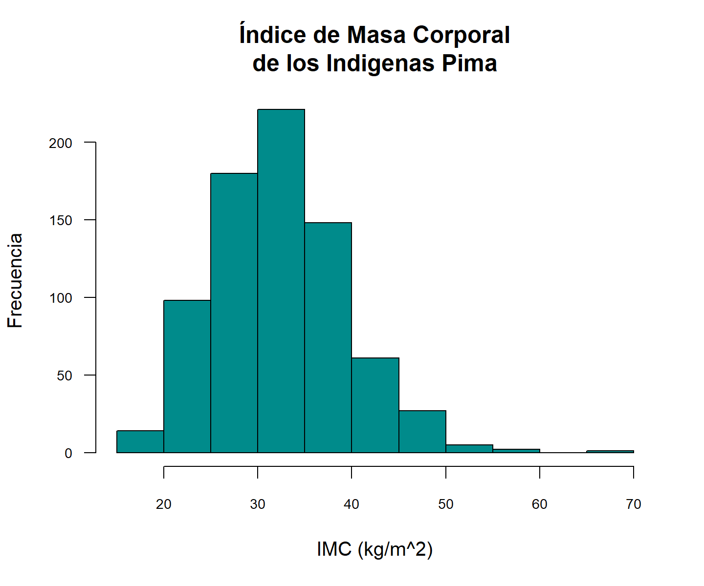
Observe que en el eje opuesto se muestra la frecuencia de ocurrencia del IMC, con este gráfico también podemos ver las frecuencias relativas o densidades que denotan las probabilidades de la variable aleatoria.
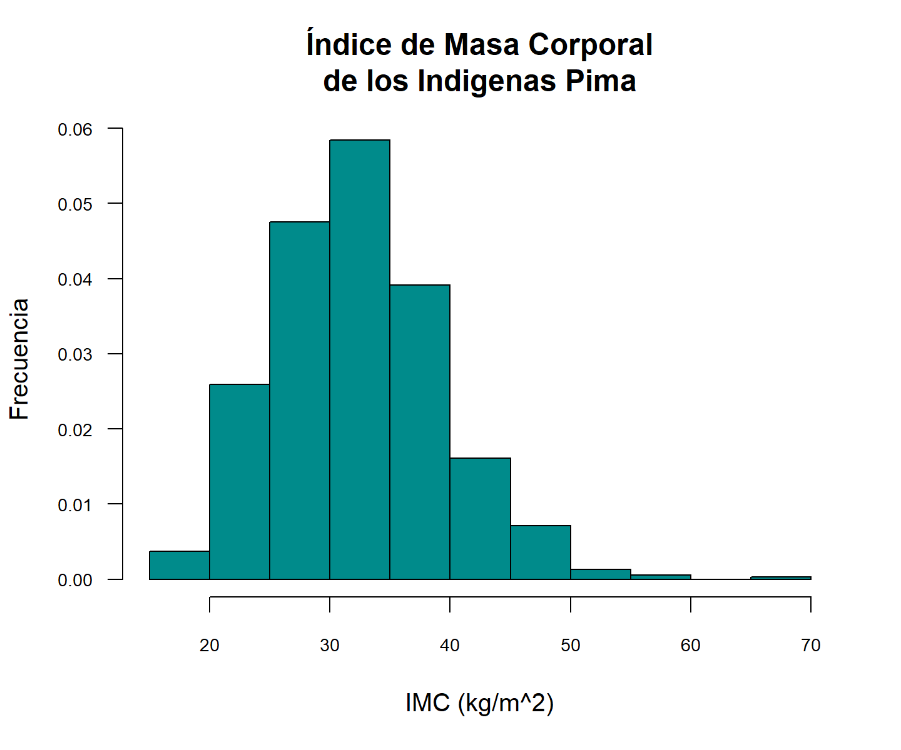
En R es fácil construir este gráfico con el siguiente código:
# La finción "hist" construye el histograma
# En los argumentos de la función se hacen los toque estéticos
# El operador "$" sirve para seleccionar una variable de un
# data.frame
hist(datos$mass,col="darkcyan",las=1,cex.axis=0.7,
main="Índice de Masa Corporal\nde los Indigenas Pima",
ylab="Frecuencia",xlab="IMC (kg/m^2)")
# Consulta la ayuda
?histDiagrama de ojiva
Este gráfico muestra la frecuencia acumulada, sea absoluta o relativa, de una variable cuantitativa según los intervalos de clases creados en el histograma. Es muy útil para observar la tasa de crecimiento en términos de probabilidad de una variable. Para construir el gráfico de ojiva necesitamos el paquete de agricolae el cual se puede instalar así:
La función de interés es ogive.freq y requiere de un histograma ya construido.
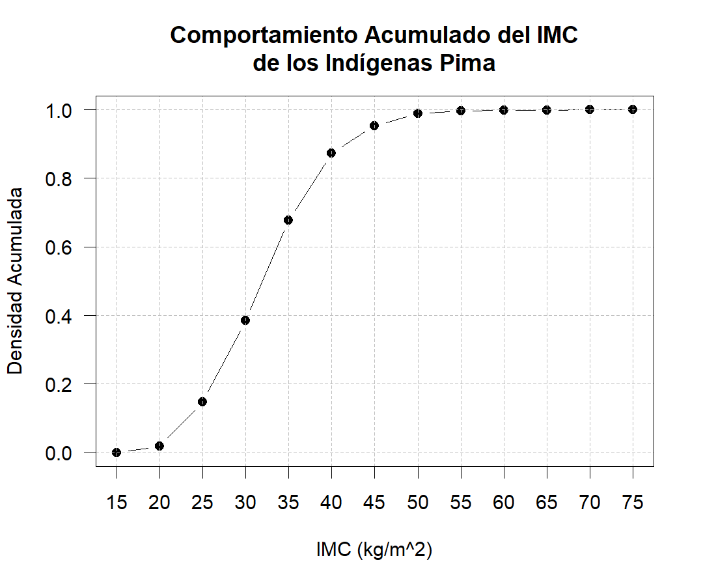
En R es fácil construir este gráfico con el siguiente código:
# La finción "hist" construye el histograma
# La función "ogive.freq" contruye la ojiva
# En los argumentos de la función se hacen los toque estéticos
ogive.freq(hist(datos$mass,plot = F),ylab="Densidad Acumulada",
xlab="IMC (kg/m^2)",pch=19,
main="Comportamiento Acumulado del IMC\nde los Indígenas Pima")
# Consulta la ayuda
?ogive.freqGráfico densidad acumulada empírica
Este gráfico es similar a la ojiva, pero se diferencia en que hace la evaluación de la distribución cumulada de todos los datos cuantitativos.

En R es fácil construir este gráfico con el siguiente código:
# La finción "ecdf" se calcula la densidad acumulada
# La función "plot" contruye el gráfico
# En los argumentos de la función se hacen los toque estéticos
plot(ecdf(datos$mass),ylab="Densidad Acumulada",
xlab="IMC (kg/m^2)",pch=19,las=1,
main="Comportamiento Acumulado del IMC\nde los Indígenas Pima")
# Qué hace este código?
ecdf(datos$mass)(30)
# Consulta la ayuda
?ecdfGráfico de densidad
Este gráfico es una estimación de la curva característica de una variable continua, la estimación se realiza vía métodos numéricos, así que es una aproximación empírica de la distribución de probabilidad.

El modelamiento de la curva comparte el mismo comportamiento del histograma, en este sentido ambos gráficos están relacionados.
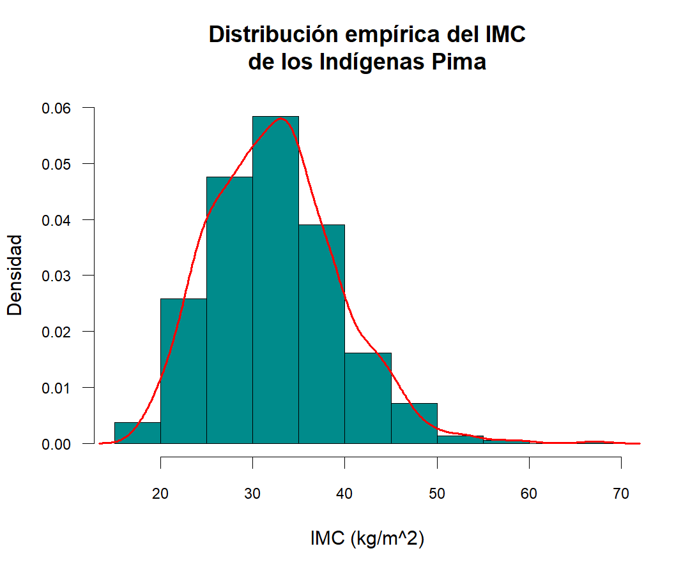
En R es fácil construir este gráfico con el siguiente código:
# La finción "density" estima la curva de densidad
# La función "lines" agrega la línea al histograma
# En los argumentos de la función se hacen los toque estéticos
hist(datos$mass,col="darkcyan",las=1,cex.axis=0.8,
main="Distribución empírica del IMC\nde los Indígenas Pima",
ylab="Densidad",xlab="IMC (kg/m^2)",freq = F,ylim=c(0,0.06))
lines(density(datos$mass,na.rm = T),col=2,lwd=2)
# Consulta la ayuda
?density
?linesBox-Plot
El gráfico de cajas y bigotes (boxplot) es un diagrama que divide una variable continua en cuartiles, es muy útil para detectar posibles valores atípicos.


En R es fácil construir este gráfico con el siguiente código:
# La finción "boxplot" construye el gráfico
# El argumento "horizontal" gira el boxplot
# En los argumentos de la función se hacen los toque estéticos
boxplot(datos$mass,pch=20,col="gold2",horizontal = T,
main="Distribución empírica del IMC\nde los Indígenas Pima",
xlab="IMC (kg/m^2)")
# Consulta la ayuda
?boxplotEste gráfico muestra por cuartiles la distribución de la variable aleatoria, en este sentido está relacionado con otros gráficos que muestran el comportamiento de los datos, como el histograma o la curva de densidad.
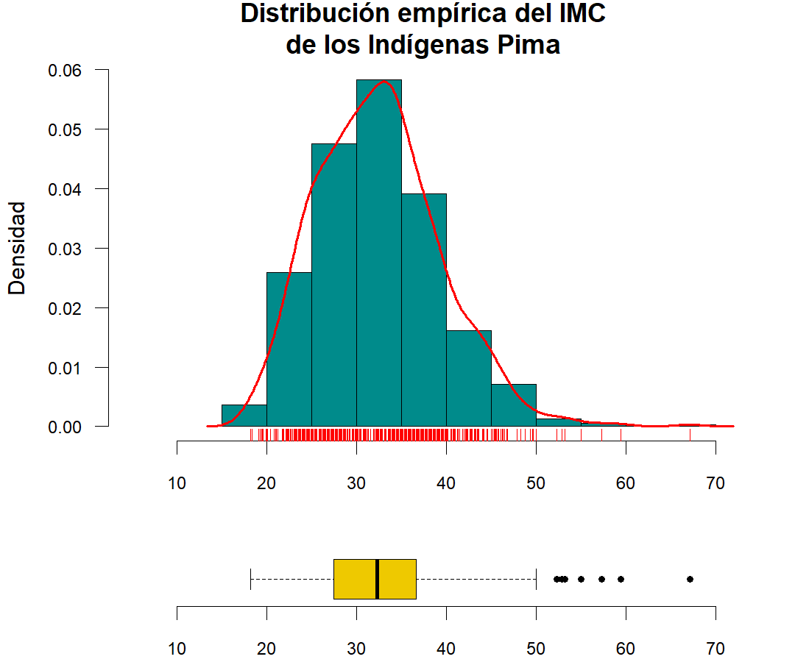
Gráficos compuestos
Hasta ahora se han vistos casos para realizar gráficos univariados, y unos cuantos que relacionan tablas de contingencias. Existen varios gráficos compuestos para relacionar más de una variable, ya sean cuantitativas o cualitativas, a continuación se presentan los gráficos más usados para literatura científica con sus respectivos códigos en R.
Para los siguientes ejemplos se utilizará el paquete ggplot2 para realizar gráficos más complejos, , pero fáciles de programar y el paquete dplyr para realizar filtros y agrupaciones de las bases de datos.
El gráfico de dispersión o scatterplot relaciona dos variables continuas, es útil para evaluar de manera visual la relación entre dos variables en términos de dependencia, sea creciente o decreciente.
# para cargar la librería
require(ggplot2)
require(dplyr)
with(datos,plot(mass~triceps,pch=20,las=1,
cex.axis=0.8,xlab="Espesor del pliegue cutáneo del tríceps (mm)",
ylab="IMC (kg/m^2)",
main="Relación del IMC de los indígenas\ncon el espesor del tríceps"))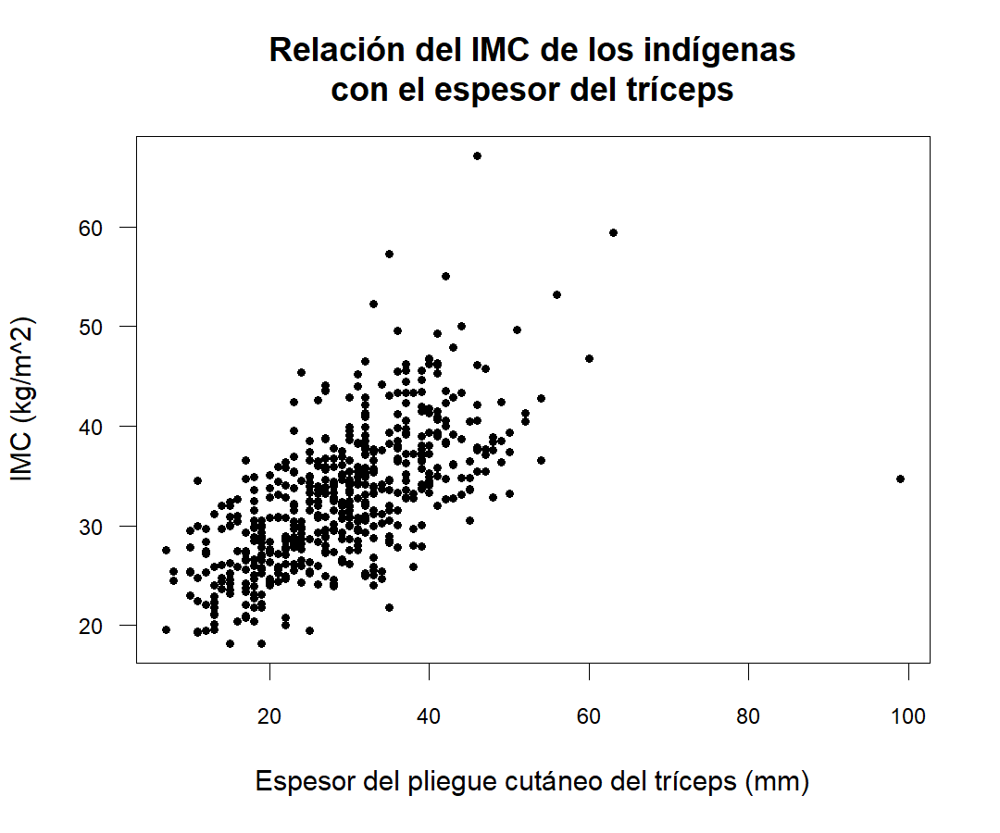
datos %>% ggplot(aes(x=triceps,y=mass))+
geom_point()+
ggtitle("Relación del IMC de los indígenas\ncon el espesor del tríceps")+
ylab("IMC (kg/m^2)")+
xlab("Espesor del pliegue cutáneo del tríceps (mm)")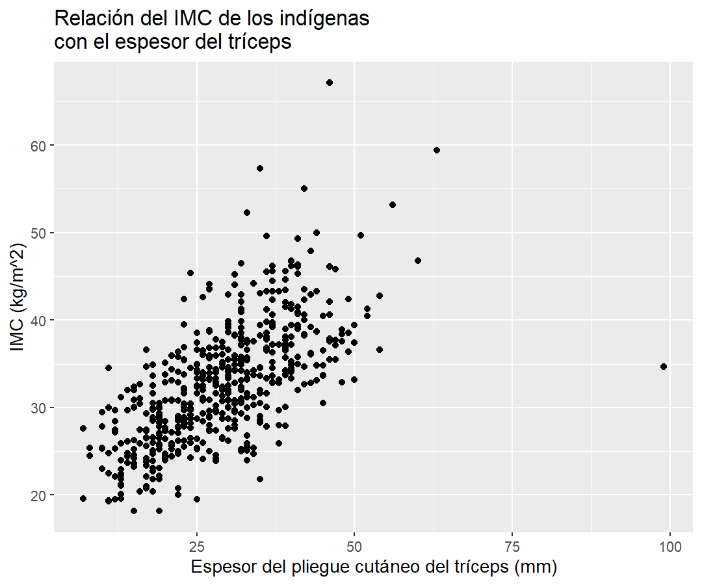
Este gráfico se puede mezclar con una variable cualitativa, ya sea para colorear los puntos e identificar los niveles o separar los gráficos, así mismo se puede filtrar la base de datos para mostrar secciones específicas de las mismas.
datos %>% ggplot(aes(x=triceps,y=mass,
colour=diabetes))+
geom_point()+
ggtitle("Relación del IMC de los indígenas\ncon el espesor del tríceps según la condición de diabetes")+
ylab("IMC (kg/m^2)")+
xlab("Espesor del pliegue cutáneo del tríceps (mm)")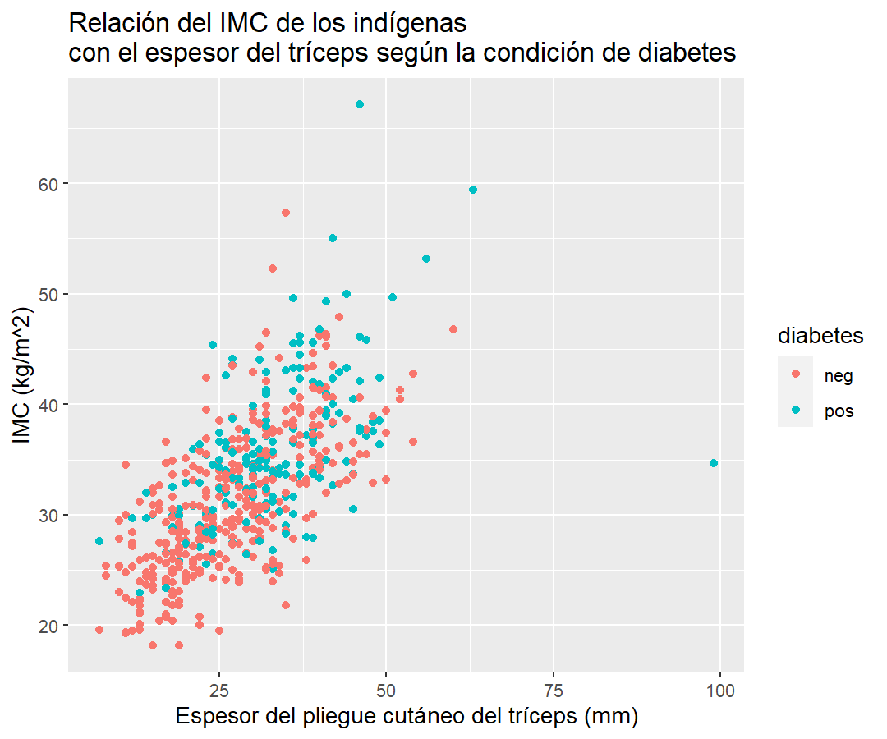
datos %>% mutate(presion=ifelse(pressure>80,"Normal","Alta")) %>%
ggplot(aes(x=triceps,y=mass,
colour=presion))+
geom_point()+
ggtitle("Relación del IMC de los indígenas\ncon el espesor del tríceps según la condición de diabetes\ny presión diastólica")+
ylab("IMC (kg/m^2)")+
xlab("Espesor del pliegue cutáneo del tríceps (mm)")+
facet_wrap(~diabetes)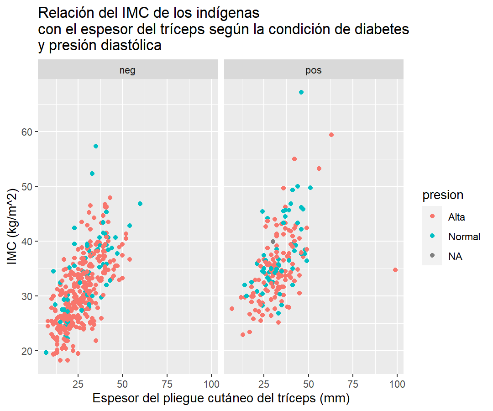
datos %>% filter(age>=28 & age<=64) %>%
mutate(presion=ifelse(pressure>80,"Normal","Alta")) %>%
mutate(CIMC=cut(mass,breaks = c(10,18.5,25,30,35,Inf),
labels = c("Delgadez","Normalidad",
"Sobrepeso","Obesidad","O Extrema"))) %>%
na.omit %>%
ggplot(aes(x=glucose,y=insulin,colour=CIMC))+
geom_point()+labs(colour="IMC")+
ggtitle("Relación entre la glucosa y la insulina\nIndígenas adultos segun IMC, presion y diabetes")+
ylab("Insulina (mu U/ml)")+
xlab("Concentración de glucosa en plasma")+
facet_grid(presion~diabetes)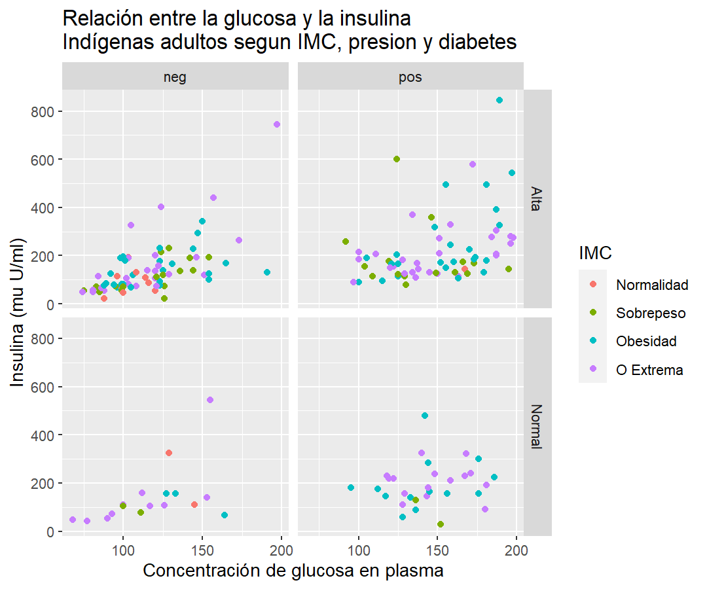
Los BoxPlot también pueden mezclar variables cualitativas y cuantitativas, ya que se puede separar por los niveles de las categorías y condicionarlas por las mediciones de la variable continua.
with(datos,boxplot(mass~diabetes,
horizontal = T,pch=20,las=1,col=hcl.colors(2),
main="IMC según la condición de diabetes",
xlab="IMC (kg/m^2)",ylab="Diabetes",cex.axis=0.8))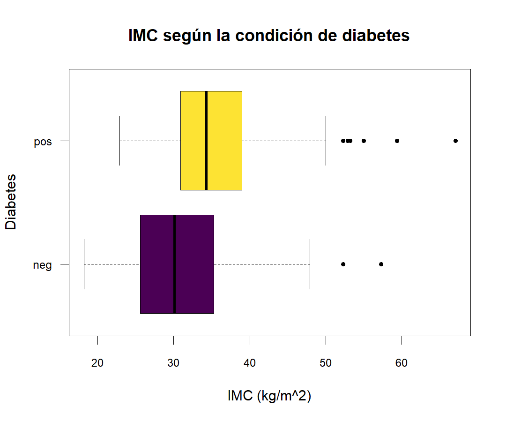
datos %>% ggplot(aes(y=mass,x=diabetes,fill=diabetes))+
geom_boxplot()+
ggtitle("IMC según la condición de diabetes")+
ylab("IMC (kg/m^2)")+xlab("Diabetes")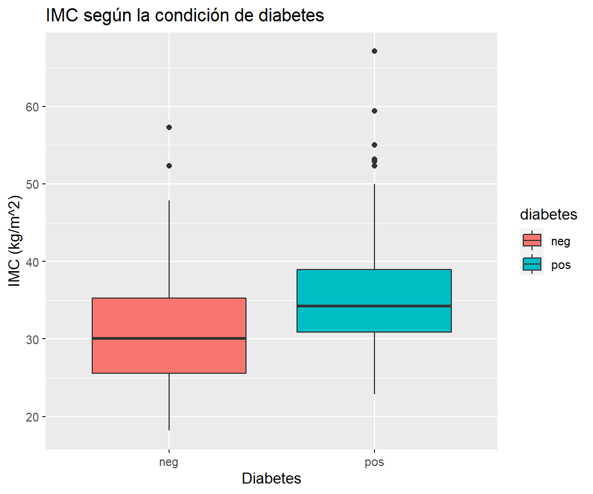
datos %>% ggplot(aes(y=mass,x=diabetes,fill=diabetes))+
geom_boxplot()+coord_flip()+
ggtitle("IMC según la condición de diabetes")+
ylab("IMC (kg/m^2)")+xlab("Diabetes")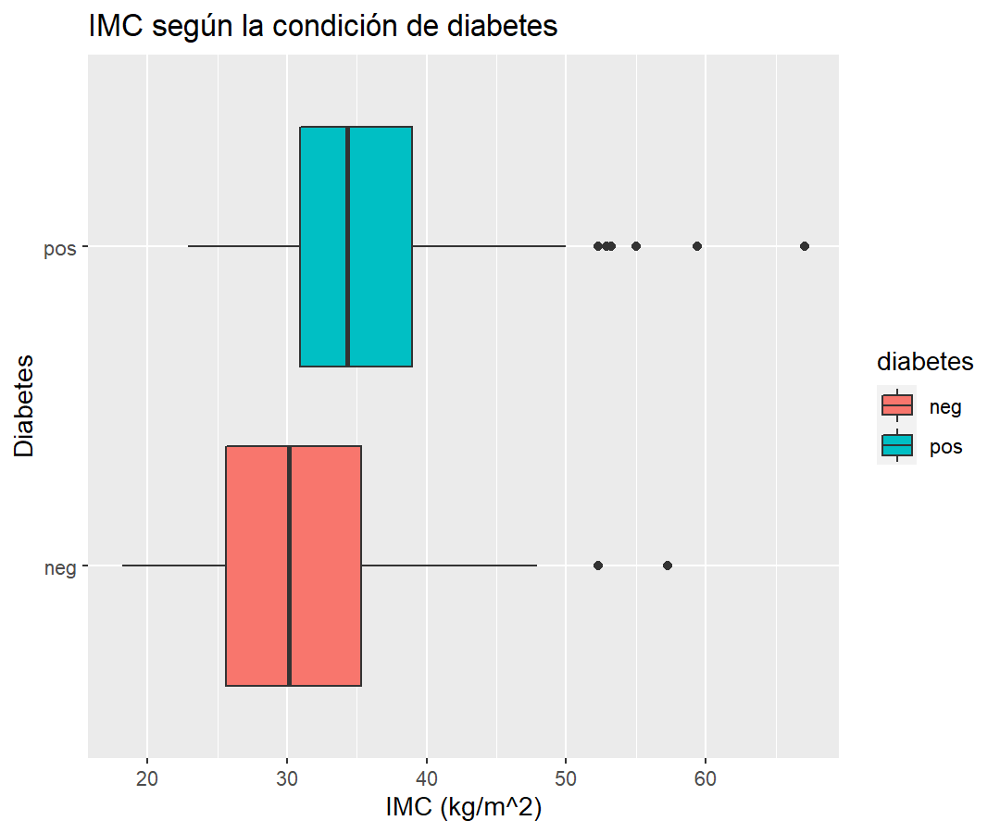
datos %>%
mutate(CIMC=cut(mass,breaks = c(10,18.5,25,30,35,Inf),
labels = c("Delgadez","Normalidad",
"Sobrepeso","Obesidad","O Extrema"))) %>%
ggplot(aes(y=insulin,x=CIMC,fill=CIMC))+
geom_boxplot()+coord_flip()+
ggtitle("Insulina sérica y condición de diabetes según IMC")+
ylab("Insulina (mu U/ml)")+xlab("IMC")+
facet_wrap(~diabetes)+theme_bw()
datos %>%
mutate(CIMC=cut(mass,breaks = c(10,18.5,25,30,35,Inf),
labels = c("Delgadez","Normalidad",
"Sobrepeso","Obesidad","O Extrema"))) %>%
na.omit %>%
ggplot(aes(y=insulin,x=diabetes,fill=diabetes))+
geom_boxplot()+
ggtitle("Insulina sérica y condición de diabetes según IMC")+
ylab("Insulina (mu U/ml)")+xlab("Diabetes")+
facet_wrap(~CIMC)+theme_bw()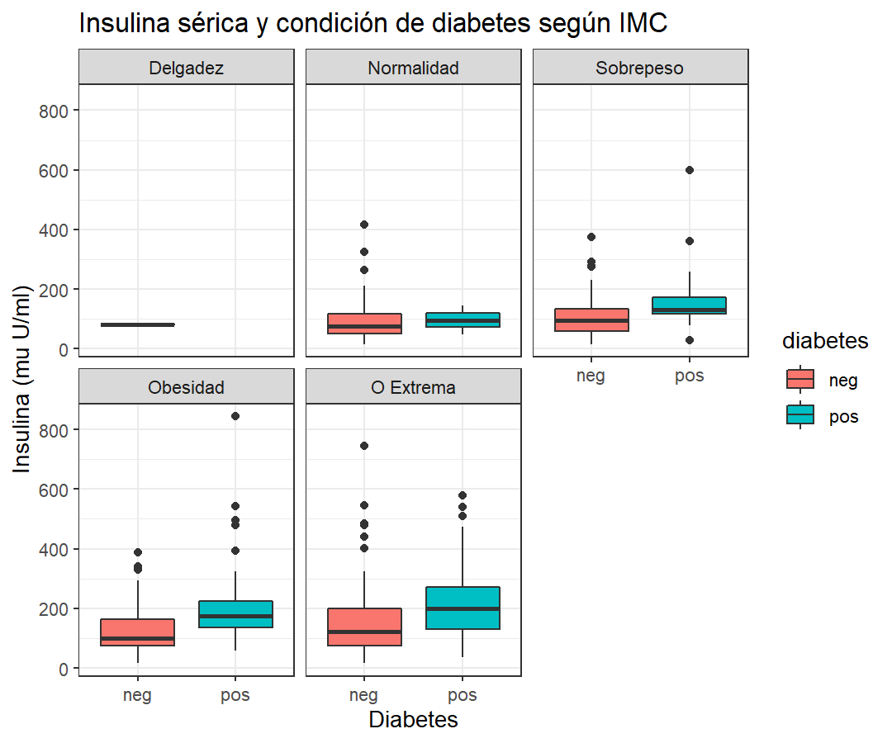